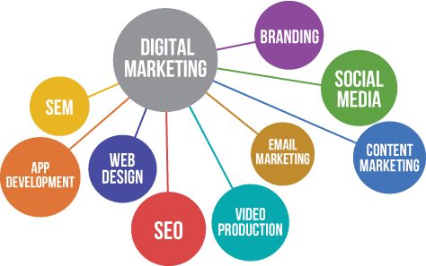
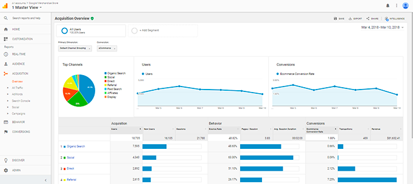

Un site web c’est indispensable. Chez Animatic on est pas forcément d’accord. La plupart des sites internet n’ont aucune utilté et ne vous rapporterons pas un seul centime (ni même un prospect). Même bien référencé sur Google certains perdent des milliers d’euro sur la création d’un site web avec une stratégie complexe. Ludovic, notre spécialiste acquisition de trafic et marketing vous explique tout aujourd’hui !
Créer un site internet c’est bien. Mais le plus important reste la façon dont on met en avant l’entreprise. Quelle est notre cible, quel est le but unique du site ou encore pourquoi les visiteurs devraient venir sur notre site ? Dans le cas des startup ou des entreprises avec des concept innovants de manière générale, il faut établir s’il y a un réel intérêt de la par de la cible. Un élément important c’est le canal d’acquisition. Il faut penser le site web comme un discours de vente automatisé mais il faut amener des visiteurs. On peux utiliser des stratégies comme le référencement, la publicité sur Google (Google Ads) ou encore les moyens organiques comme Facebook ou encore Instagram.
Bon, je vous ai peut-être un peu survendu la chose. Les secrets sont simples. Du contenu adapté, la mise en place de CTA (appel à l’action précis) et l'obsession de l’expérience utilisateur.
Après avoir passé de 0 à 1 une fois votre site web créé, on va chercher à passer de 1 à 100. L’une des clés pour faire performer son site web c’est la mesure et la prise de décision. Personnellement je vous conseil 2 outils assez puissants que sont Google Analytics et Hotjar. Le premier va vous permettre d’avoir les données clés sur votre site web comme le taux de rebond ou encore la durée moyenne des sessions. Le Second, Hotjar va vous permettre de connaître les “zones chaudes” de votre site et d’analyser le parcours utilisateur.
La mise en place d’un site web demande énormément de réflexion. Cela va bien au delà du simple template Wordpress avec quelques informations. La création du site web demande une véritable expertise.